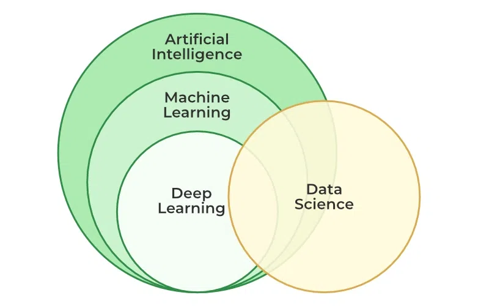

‣What is Machine Learning?
Machine learning (ML) is a type of Artificial Intelligence (AI) that allows computers to learn without being explicitly programmed. It involves feeding data into algorithms that can then identify patterns and make predictions on new data. Machine learning is used in a wide variety of applications, including image and speech recognition, natural language processing, and recommender systems.
‣Definition of Learning
A computer program is said to learn from experience E concerning some class of tasks T and performance measure P, if its performance at tasks T, as measured by P, improves with experience
Examples
-
Handwriting recognition learning problem
- Task T : Recognizing and classifying handwritter words within images
- Performance P : Percent of words correctly classified
- Training experience E : A dataset of handwritten words with givem classifications
-
A robot driving learning problem
- Task T : Driving on a highway using vision sensors
- Performance P : Average distance traveled before an error
- Training experience E : A sequence of images and steering commands recorded while observing a human driver
‣What is Machine Learning?
Machine learning is a branch of artificial intelligence that enables algorithms to uncover hidden patterns within datasets, allowing them to make predictions on new, similar data without explicit programming for each task. Traditional machine learning combines data with statistical tools to predict outputs, yielding actionable insights. This technology finds applications in diverse fields such as image and speech recognition, natural language processing, recommendation systems, fraud detection, portfolio optimization, and automating tasks.
For instance, recommender systems use historical data to personalize suggestions. Netflix, for example, employs collaborative and content-based filtering to recommend movies and TV shows based on user viewing history, ratings, and genre preferences. Reinforcement learning further enhances these systems by enabling agents to make decisions based on environmental feedback, continually refining recommendations.
Machine learning’s impact extends to autonomous vehicles, drones, and robots, enhancing their adaptability in dynamic environments. This approach marks a breakthrough where machines learn from data examples to generate accurate outcomes, closely intertwined with data mining and data science.
‣How machine learning algorithms work
Machine Learning works in the following manner.
A machine learning algorithm works by learning patterns and relationships from data to make predictions or decisions without being explicitly programmed for each task. Here’s a simplified overview of how a typical machine learning algorithm works:
1. Data Collection :
First, relevant data is collected or curated. This data could include examples, features, or attributes that are important for the task at hand, such as images, text, numerical data, etc.
2. Data Preprocessing :
Before feeding the data into the algorithm, it often needs to be preprocessed. This step may involve cleaning the data (handling missing values, outliers), transforming the data (normalization, scaling), and splitting it into training and test sets.
3. Choosing a Model :
Depending on the task (e.g., classification, regression, clustering), a suitable machine learning model is chosen. Examples include decision trees, neural networks, support vector machines, and more advanced models like deep learning architectures.
4. Training a Model :
The selected model is trained using the training data. During training, the algorithm learns patterns and relationships in the data. This involves adjusting model parameters iteratively to minimize the difference between predicted outputs and actual outputs (labels or targets) in the training data.
5. Evaluating a Model :
Once trained, the model is evaluated using the test data to assess its performance. Metrics such as accuracy, precision, recall, or mean squared error are used to evaluate how well the model generalizes to new, unseen data.
6. Fine-tuning :
Models may be fine-tuned by adjusting hyperparameters (parameters that are not directly learned during training, like learning rate or number of hidden layers in a neural network) to improve performance.
7. Prediction :
Finally, the trained model is used to make predictions or decisions on new data. This process involves applying the learned patterns to new inputs to generate outputs, such as class labels in classification tasks or numerical values in regression tasks.
‣Introduction to Data in Machine Learning
Data is a crucial component in the field of Machine Learning. It refers to the set of observations or measurements that can be used to train a machine-learning model. The quality and quantity of data available for training and testing play a significant role in determining the performance of a machine-learning model. Data can be in various forms such as numerical, categorical, or time-series data, and can come from various sources such as databases, spreadsheets, or APIs. Machine learning algorithms use data to learn patterns and relationships between input variables and target outputs, which can then be used for prediction or classification tasks.
Data is typically divided into two types:
1. Labeled data
2. Unlabeled data
Labeled data includes a label or target variable that the model is trying to predict, whereas unlabeled data does not include a label or target variable. The data used in machine learning is typically numerical or categorical. Numerical data includes values that can be ordered and measured, such as age or income. Categorical data includes values that represent categories, such as gender or type of fruit.
Data can be divided into training and testing sets. The training set is used to train the model, and the testing set is used to evaluate the performance of the model. It is important to ensure that the data is split in a random and representative way.
Data preprocessing is an important step in the machine learning pipeline. This step can include cleaning and normalizing the data, handling missing values, and feature selection or engineering.
DATA:It can be any unprocessed fact, value, text, sound, or picture that is not being interpreted and analyzed. Data is the most important part of all Data Analytics, Machine Learning, and Artificial Intelligence. Without data, we can’t train any model and all modern research and automation will go in vain. Big Enterprises are spending lots of money just to gather as much certain data as possible.
INFORMATION:Data that has been interpreted and manipulated and has now some meaningful inference for the users.
KNOWLEDGE:Combination of inferred information, experiences, learning, and insights. Results in awareness or concept building for an individual or organization.
How do we split data in Machine Learning?
- Training Data:The part of data we use to train our model. This is the data that your model actually sees(both input and output) and learns from.
- Validation Data:The part of data that is used to do a frequent evaluation of the model, fit on the training dataset along with improving involved hyperparameters (initially set parameters before the model begins learning). This data plays its part when the model is actually training.
- Testing Data:Once our model is completely trained, testing data provides an unbiased evaluation. When we feed in the inputs of Testing data, our model will predict some values(without seeing actual output). After prediction, we evaluate our model by comparing it with the actual output present in the testing data. This is how we evaluate and see how much our model has learned from the experiences feed in as training data, set at the time of training.